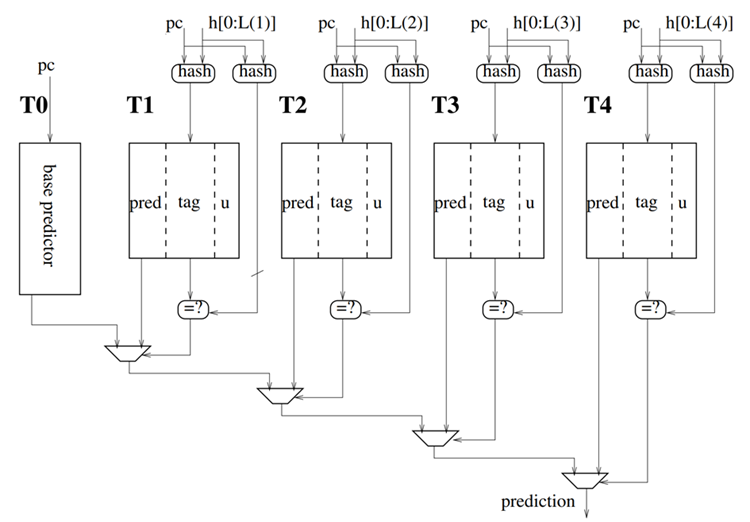
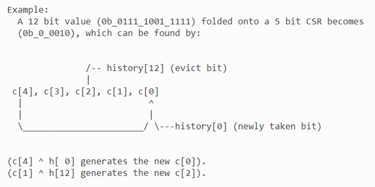
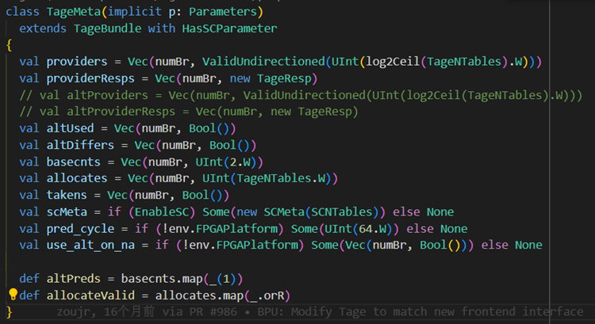
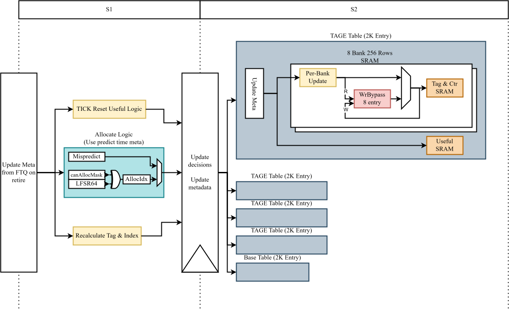
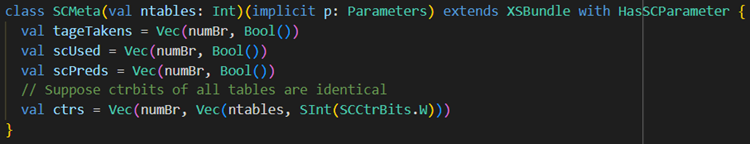
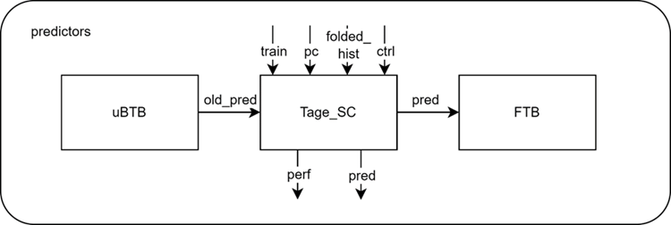
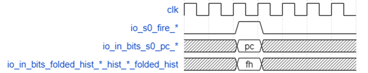
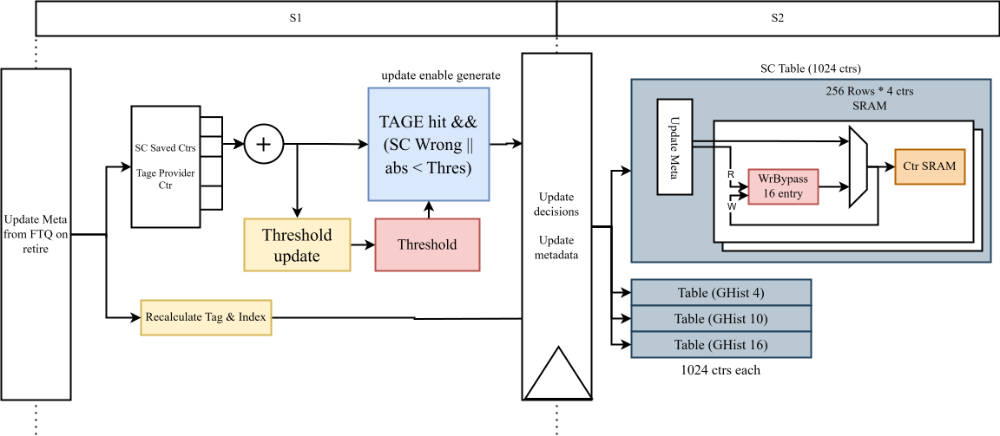

BPU サブモジュール TAGE-SC
機能
TAGE-SC は南湖アーキテクチャの条件分岐の主要な予測器であり、高精度予測器（Accurate Predictor、略して APD）に属します。その中で TAGE は、履歴長の異なる複数の予測テーブルを利用して、非常に長い分岐履歴情報を掘り起こすことができます。SC は統計的補正器です。
TAGE は、1つのベース予測テーブルと複数の履歴テーブルで構成されています。ベース予測テーブルは PC でインデックス付けされ、履歴テーブルは PC と一定長の分岐履歴を折りたたんだ結果を XOR してインデックス付けされます。異なる履歴テーブルでは、使用される分岐履歴の長さが異なります。予測時には、PC と各履歴テーブルに対応する分岐履歴の別の折りたたみ結果を XOR してタグを計算し、テーブルから読み取ったタグと照合します。一致した場合、そのテーブルはヒットしたことになります。最終的な結果は、ヒットした履歴長が最も長い予測テーブルの結果に依存します。
SC が TAGE が誤予測する可能性が高いと判断した場合、最終的な予測結果を反転させます。
南湖アーキテクチャでは、1回の予測で最大2つの条件分岐命令を同時に予測します。TAGE の各履歴テーブルにアクセスする際、予測ブロックの開始アドレスを PC として使用し、同時に2つの予測結果を取り出します。それらが使用する分岐履歴も同じです。
TAGE：設計思想
TAGE はハイブリッド予測器として、ある分岐命令に対して、異なる長さの分岐履歴シーケンスに基づいて同時に分岐予測を行い、その分岐命令の各履歴シーケンス下での精度を評価し、履歴精度が最も高いものを最終的な分岐予測の判断基準として選択できるという利点があります。
従来のハイブリッド予測器と比較して、TAGE は以下の2つの新しい設計特性を兼ね備えており、その予測精度を大幅に向上させています。
- 各予測テーブルのテーブルエントリにタグデータを追加しました。従来の優先分岐予測器では、分岐履歴と現在の分岐命令の PC 値のみを基準に予測テーブルからフェッチすることがよくありました。この状況では、複数の異なる分岐命令が同じ予測テーブルエントリを指す（エイリアシング）という状況が発生し、この状況はハイブリッド予測器で採用されている分岐履歴が短い一部の予測テーブルが提供する分岐予測精度に特に大きな影響を与えます。そのため、TAGE の設計では、パーシャルタギングの方法により、現在の命令と予測テーブル内のテーブルエントリをより適切に実際に照合でき、上記のような状況の発生を大幅に回避できます。
- 幾何学級数的に変化する分岐履歴長を使用して異なる予測テーブルをインデックス付けすることで、分岐予測プロセスにおける各予測テーブルのテーブルエントリ選択プロセスの粒度が大幅に向上しました。さらに、各テーブルエントリには usefulness カウンタが追加されており、分岐予測に対するそのエントリの有用性を記録します。この設計により、さまざまな種類の分岐命令が、予測精度が最も高い分岐履歴長でインデックス付けされて最終的な分岐予測を行う可能性が高くなります。
これら2つの設計特性により、TAGE 予測器は、選択した履歴分岐長が短すぎて特定の予測テーブルのエントリが複数の異なる命令に同時にマッピングされてエントリの情報有効性が低下することも、選択した履歴長が長すぎて TAGE 全体が非常に長い更新期間を経てからでないと効果的な予測機能を発揮できないということもありません。したがって、TAGE が採用できる分岐履歴長の範囲は非常に広く、さまざまなコードコンテキスト下の分岐命令を判断するために使用できます。
TAGE：ハードウェア実装
TAGE は高精度の条件分岐方向予測器です。異なる長さの分岐履歴と現在の PC 値を使用して複数の SRAM テーブルをアドレス指定し、複数のテーブルでヒットが発生した場合、最もヒットした履歴長が最も長い対応するテーブルエントリの予測結果を最終結果として優先します。

TAGE の構造原理図を上に示します。ベース予測器 T0 と4つのタグ付き予測テーブル T1-T4 を提供します。ベース予測器とタグ付き予測テーブルの基本情報を以下の表に示します。
| 予測器 | タグ付きか | 役割 | テーブルエントリの構成 | エントリ数 |
|---|---|---|---|---|
| ベース予測器 T0 | いいえ | 4つのローカルタグ予測テーブルのタグがすべて一致しない場合に予測結果を提供するために使用されます | ctr 2bits（最上位ビットが予測結果を提供、1 はジャンプ、0 はジャンプしない） | set 2048way 2 |
| 予測テーブル T1-T4 | はい | タグが一致する場合、履歴長が最も長いものが予測結果を提供するために選択されます | valid 1bittag 8bitsctr 3bits（最上位ビットが予測結果を提供、1 はジャンプ、0 はジャンプしない）us: 1bit（usefulness カウンタ） | T1-T4 各 4096 エントリ |
注：上の表の way は chisel の SRAMTemplate クラスのパラメータ名であり、このパラメータの値は SRAM に同じタイプのデータがいくつ格納されているかを表し、必ずしも通常意味するタグマッチングが必要な way を表すわけではありません。T0 に2つの way があるのは、予測ブロック内に最大2つの分岐命令があるためで、異なる way は予測ブロック内の2つの異なる分岐命令をそれぞれ予測するためのものです。
各予測ブロックの2つのジャンプ命令の予測内容は、個別に保存および更新されます。タグ付き予測テーブル T1-T4 の 4096 エントリは、予測ブロック内の最大2つの分岐のために2つのバンクに均等に分割する必要があり、各バンクには 2048 エントリがあるため、予測テーブル T1-T4 のインデックスは 11bit のみで、log2（予測テーブルのエントリ数/2）です。同じ予測ブロック内の2つの分岐命令のインデックスは同じですが、2つの異なるバンクをインデックス付けするため、2つのバンクから一度に読み出された2つの予測情報を表す結果は、一方がヒットし、もう一方がヒットしない可能性があります。
TAGE 型予測器の各予測テーブルには、特定の履歴長があります。非常に長いグローバル分岐履歴テーブルを PC と XOR して予測テーブルのインデックス付けやタグマッチングを行えるようにするには、非常に長い分岐履歴シーケンスを多くのセグメントに分割し、それらをすべて XOR する必要があります。各セグメントの長さは、通常、履歴テーブルの深さの対数に等しくなります。XOR の回数は通常多いため、予測パス上の多段 XOR の遅延を避けるために、折りたたまれた後の履歴を直接保存します。
各予測テーブルに対応する折りたたみ分岐履歴は3つあり、1つは予測テーブルのインデックス用、2つはタグマッチング用です。BPU モジュールでは、256 ビットのグローバル分岐履歴 ghv が維持され、TAGE の4つのタグ付き予測テーブルそれぞれに独自の折りたたみ分岐履歴が維持されます。具体的な構成は以下の表（TageTableInfos を参照）に示されています。ここで、ghv は循環キューであり、「下位」n ビットは ptr が指す位置から数えた下位ビットを指します。
| 履歴 | インデックス折りたたみ分岐履歴長 | タグ折りたたみ分岐履歴 1 長 | タグ折りたたみ分岐履歴 2 長 | 設計原理 |
|---|---|---|---|---|
| グローバル分岐履歴 ghv | 256 ビット（非折りたたみ） | なし | なし | 各ビットは対応する分岐がジャンプしたかどうかを表します |
| T1 対応折りたたみ分岐履歴 | 8 ビット | 8 ビット | 7 ビット | ghv の ptr から始まる下位 8 ビットを折りたたんで XOR |
| T2 対応折りたたみ分岐履歴 | 11 ビット | 8 ビット | 7 ビット | ghv の ptr から始まる下位 13 ビットを折りたたんで XOR |
| T3 対応折りたたみ分岐履歴 | 11 ビット | 8 ビット | 7 ビット | ghv の ptr から始まる下位 32 ビットを折りたたんで XOR |
| T4 対応折りたたみ分岐履歴 | 11 ビット | 8 ビット | 7 ビット | ghv の ptr から始まる下位 119 ビットを折りたたんで XOR |

上の図に示すように、タイミングを考慮して、折りたたみ分岐履歴の具体的な実現方法は、設計原理の折りたたみではなく、折りたたみ前の分岐履歴の最も古いビット（図の h[12] に対応）と最新のビット（図の h[0] に対応）を対応する位置（図の c[1] と c[4] に対応）に XOR し、シフト操作（図の c[0] と c[2] になる）を行うだけです。擬似コードは以下のようになります。
c[0] <= c[4] ^ h[0];
c[1] <= c[0];
c[2] <= c[1] ^ h[12];
c[3] <= c[2];
c[4] <= c[3];
分岐履歴テーブルは、バックエンドのコミット後にのみ更新されるわけではなく、s1〜s3 の中間各レベルで更新される可能性があります。更新時にはポインタと値が更新されます。s1〜s3 で新しい結果が生成されると、ポインタが復元され、新しい値が更新されます。ただし、予測に誤りがない場合は（以前に更新されているため）変更されません。
注：TAGE の折りたたみ分岐履歴の具体的な構成表からわかるように、タグ折りたたみ分岐履歴は2つあります。どちらも同じ折りたたみアルゴリズムを使用していますが、違いは折りたたみ長が異なる点です。T1-T4 のタグ折りたたみ分岐履歴 1 はすべて 8 ビットですが、タグ折りたたみ分岐履歴 2 はすべて 7 ビットです。
TAGE：予測タイミング
予測を行うたびに、まず各タグ付き予測テーブルで PC 値とそれぞれの分岐履歴を使用して2つの異なるハッシュ関数計算（以下の表を参照）が行われます。計算結果は、それぞれその演算の最終タグの計算と予測テーブルのインデックス付けに使用されます。
| 計算方法 | |
|---|---|
| インデックス | （インデックス折りたたみ分岐履歴）^（（pc>>1）の下位） |
| タグ | （タグ折りたたみ分岐履歴 1）^（タグ折りたたみ分岐履歴 2<<1）^（（pc>>1）の下位） |
T1-T4 でインデックスによって得られた valid が 1 で、かつタグが計算されたタグハッシュ関数の結果と一致する場合、その予測テーブルで与えられた pred の最上位ビットが最終的な分岐予測シーケンスに追加されます。最終的に、多段 MUX を介して、すべてのタグが一致した分岐予測の中から履歴長が最も長いものが最終的な予測結果として選択されます。
T1-T4 に一致がない場合、T0 が最終的な予測結果として採用されます。T0 のインデックス方法は、PC の下位 11 ビットを直接インデックスとして使用することです。
TAGE には 2 サイクルの遅延が必要です。
- 0 サイクル目：SRAM アドレッシング用のインデックスを生成します。インデックスの生成プロセスは、折りたたまれた履歴と PC を XOR することです。折りたたまれた履歴の管理は ITTAGE と TAGE の内部ではなく、BPU 内にあります。
- 1 サイクル目：結果を読み出します。
- 2 サイクル目：予測結果を出力します。
TAGE：予測器のトレーニング
まず、すべてのタグマッチを生成した予測テーブルの中で、必要な履歴長が最も長いものを provider と定義し、残りのタグマッチを生成した予測テーブル（存在する場合）を altpred と呼びます。
TAGE テーブルのエントリには usefulness フィールドが含まれており、provider が正しく予測し、altpred が誤って予測した場合、provider の usefulness は 1 に設定されます。これは、そのエントリが有用なエントリであることを示し、トレーニング時の割り当てアルゴリズムによって空きエントリとして割り当てられることはありません。provider が生成した予測が正しいと証明され、かつその時の provider と altpred の予測結果が異なる場合、provider の usefulness フィールドが設定されます。 分岐命令が実際にジャンプする場合、対応する provider テーブルエントリの ctr カウンタがインクリメントされます。分岐命令が実際にはジャンプしない場合、対応する provider テーブルエントリの ctr カウンタがデクリメントされます。 誤予測により TAGE テーブルエントリを更新する必要があり、かつ誤予測が altpred を使用して正しい provider を破棄したことによるものではない場合、テーブルエントリを追加する必要があることを示します。ただし、この時点で実際にテーブルエントリを追加できるとは限りません。provider が由来する予測テーブルが、必要な履歴長が最も長い予測テーブルではないという条件も満たす必要があります。その場合、テーブルエントリの追加操作が実行されます。
ここでは、provider が由来する予測テーブルが、必要な履歴長が最も長い予測テーブルではないかどうかを判断する例を論理的に示します。
s1_providers(i) は、予測ブロック内の i 番目の分岐の provider に対応する予測テーブルの番号を表します。provider が予測テーブル T2 にあると仮定すると、LowerMask(UIntToOH(s1_providers(i)), TageNTables) は 0b0011 です。s1_provideds(i) は、予測ブロック内の i 番目の分岐の provider が T1〜T4 にあるかどうかを表します。先ほどの仮定に基づくと、Fill(TageNTables, s1_provideds(i).asUInt) は 0b1111 です。この2つを AND すると、結果は 0b0011 になります。これを反転すると 0b1100 になり、T3、T4 が provider よりも履歴長が長い予測テーブルであることがわかります。
もう1つ例を挙げます。最初は、予測テーブルはすべて空で、provider は存在しません。このとき、対応する s1_providers(i) は 0、s1_provideds(i) は false です。すると、Fill(TageNTables, s1_provideds(i).asUInt) は 0b0000 になります。この2つを AND して反転すると、必ず 0b1111 になります。これは、T1〜T4 がすべて、いわゆる provider よりも履歴長が長い予測テーブルに属することを示しています。
具体的なテーブルエントリの追加操作は以下の通りです。
テーブルエントリの追加操作では、まず provider よりも履歴長が長いすべての予測テーブルの usefulness を読み取ります。このとき、いずれかのテーブルの usefulness フィールドの値が 0 であれば、そのテーブルに対応するテーブルエントリを割り当てます。usefulness フィールドの値が 0 のテーブルが見つからなければ、割り当ては失敗します。複数の予測テーブル（例えば Tj、Tk の2つ）の usefulness フィールドがともに 0 の場合、テーブルエントリの割り当て確率はランダムです。割り当て時には、いくつかのテーブルをランダムにマスクして、毎回同じテーブルが割り当てられないようにします。このマスクの具体的な実装は次の通りです。選択候補の履歴テーブル（providerより長く、uが0のすべての履歴テーブル）の中から、生成された乱数を使用してランダムにいくつかのテーブルをマスクします。もしマスクされたエントリの最初のものが利用不可であれば、マスクされていない最初のものを選択します。ここのテーブルエントリ割り当てのランダム性は、chisel の util パッケージにある 64 ビット線形帰還シフトレジスタ（LFSR64）プリミティブを使用して擬似乱数を生成することで実現されます。verilog コードでは、allocLFSR_lfsr レジスタに対応します。トレーニング時には、7bit の飽和カウンタ bankTickCtrs を使用して、割り当て失敗回数-成功回数を統計します。割り当て失敗回数が十分に多くなり、bankTickCtrs カウンタが飽和状態に達すると、グローバルな useful bit のリセットがトリガーされ、すべての usefulness フィールドがゼロにクリアされます。
最後に、初期化時/TAGE テーブルに新しいエントリが割り当てられる時、すべてのテーブルエントリの ctr カウンタは 0 に設定され、すべての usefulness フィールドは 0 に設定されます。
注：同じ予測ブロック内の2つの分岐命令に対応する usefulness は必ずしも等しいとは限りません。altpred の最初の分岐がジャンプを予測し、2番目の分岐がジャンプしないを予測し、provider が両方ともジャンプを予測した場合、最初の u のみを1に設定する必要があります。
注：meta は予測器が予測する際のデータであり、更新時に更新のために取り戻されます。すべて meta と呼ばれるのは、composer がすべての予測器を統合し、共通のインターフェース meta を使用して外部と対話するためです。TAGE の meta の具体的な構成を以下の図に示します。

TAGE：代替予測ロジック（USE ALT ON NA）
タグが一致したエントリの信頼度カウンタ ctr が 0 の場合、altpred は通常の予測よりも正確な場合があります。そのため、実装では 4 ビットカウンタ useAltCtr を使用して、最長履歴一致の結果の信頼度が低い場合に代替予測を使用するかどうかを動的に決定します。実装では、タイミングを考慮して、常にベース予測テーブルの結果を代替予測として使用します。これにより、精度への影響はわずかです。
代替予測ロジックの具体的な実装は以下の通りです。
ProviderUnconf は、最長履歴一致の結果の信頼度が低いことを示します。provider に対応する ctr の値が 0b100、0b011 の場合、最長履歴一致の結果の信頼度が高いことを示し、このとき providerUnconf は false です。provider に対応する ctr の値が 0b01、0b10 の場合、最長履歴一致の結果の信頼度が低いことを示し、このとき providerUnconf は true です。
useAltOnNaCtrs は 128 個の 4 ビット飽和カウンタで構成されるカウンタグループで、各カウンタは 0b1000 に初期化されます。TAGE がトレーニング更新要求を受け取ったとき、トレーニングに使用された予測で、provider の予測結果が altpred と異なり、かつ provider の予測結果の信頼度が低いことがわかった場合、代替予測結果が正しいかどうかを検討します。代替予測結果が正しく、provider が誤っている場合、対応する useAltOnNaCtrs カウンタの値が+1されます。代替予測結果が誤っており、provider が正しい場合、対応する useAltOnNaCtrs カウンタの値が-1されます。useAltOnNaCtrs は飽和カウンタであるため、useAltOnNaCtrs の値がすでに 0b1111 であり、かつ正しい場合、またはすでに 0b0000 であり、かつ誤っている場合、useAltOnNaCtrs の値は変わりません。
useAltOnNa は、pc(7, 1)、つまり pc の対応する下位ビットを使用して useAltOnNaCtrs カウンタグループをインデックス付けした後に得られるカウント結果の最上位ビットです。
providerUnconf && useAltOnNa が真の場合、代替予測結果（つまり、ベース予測テーブルの結果）が TAGE の最終的な予測結果として使用され、provider の予測結果は使用されません。
TAGE：wrbypass
Wrbypass には Mem と Cam があり、更新の順序付けに使用されます。TAGE が更新されるたびに、この wrbypass に書き込まれ、同時に対応する予測テーブルの sram にも書き込まれます。更新のたびにこの wrbypass がチェックされ、ヒットした場合、読み出された TAGE の ctr 値が古い値として使用され、以前に branch 命令とともにバックエンドに送られ、フロントエンドに送り返された古い ctr 値は破棄されます。これにより、ある分岐が繰り返し更新された場合でも、wrbypass は、ある更新が必ず隣接する前回の更新の最終値を取得できることを保証します。
T0 には対応する wrbypass が1つあり、T1〜T4 にはそれぞれ 16 個あります。各予測テーブルに対応する wrbypass では、Mem には 8 つのエントリがあり、T0 の各エントリには2つ（2つのバンクに対応）の予測テーブルのエントリが格納され、T1〜T4 の各エントリには1つ（2つのバンクが異なる wrbypass に格納されているため）の予測テーブルのエントリが格納されます。Cam には 8 つのエントリがあり、更新の idx と tag（T0 には tag がない）を入力すると、対応するデータが Cam 内のどこにあるかを読み取ることができます。Cam と Mem は同時に書き込まれるため、データが Cam 内にある位置は Mem 内にある位置と同じです。したがって、この Cam を使用すると、更新時に対応する idx のデータが wrbypass にあるかどうかを確認できます。
ストレージ構造
- 4つの履歴テーブル。各テーブルは PC の下位ビットに基づいて合計 8 つのバンクに分割され、各バンクには 256 のセットがあり、各セットは FTB エントリの最大 2 つの分岐に対応します。各バンクには合計 512 のエントリがあり、各テーブルには合計 4096 のエントリがあり、すべてのテーブルには合計 16K のエントリがあります。
- 各テーブルエントリには、1bit の valid、8bit の tag、3bit の ctr、1bit の useful が含まれます。useful bit は独立して保存されます。
- ベーステーブルには 2048 のセットがあり、各セットの2つの分岐にはそれぞれ 2bit の飽和カウンタがあり、合計 4K の分岐を記録します。
- 履歴テーブルの各バンクには 8 エントリの書き込みキャッシュ wrbypass があり、ベーステーブルには合計 8 エントリの wrbypass があります。
- use_alt_on_na 予測には、合計 128 個の 4 ビット飽和カウンタがあります。
インデックス方式
- index = pc[11:1] ^ folded_hist(11bit)
- tag = pc[11:1] ^ folded_hist(8bit) ^ (folded_hist(7bit) << 1)
- 履歴は基本的なセグメント化 XOR フォールディングを採用
- 各エントリの2つの分岐と FTB の2つのスロット間の2つの対応関係は、pc[1] を使用して選択されます。FTB エントリの確立メカニズムにより、最初のスロットの使用率は2番目のスロットよりも高くなります。この措置により、この不均一な分布を緩和できます。
- ベーステーブルと use_alt_on_na は、どちらも PC の下位ビットを直接インデックスとして使用します。
予測フロー
- s0 でインデックス計算を行い、アドレスを SRAM に送信します。対応するバンクのみが有効になります。
- s1 でタグマッチングとバンクデータの選択、および2つのスロット間の並べ替えを行い、各履歴テーブルの合計結果を取得し、トップレベルに渡して最長履歴を選択し、use_alt_on_na メカニズムと組み合わせて、最長履歴マッチングとベーステーブルの間で選択します（元のアルゴリズムを常にベーステーブルを代替予測として使用するように簡略化します）。各分岐の予測結果を取得した後、s2 に一時保存します。
- s2 は予測結果を使用し、BPU 内で s1 の結果と比較して、パイプラインをフラッシュする必要があるかどうかを判断します。
トレーニングフロー

FTQ からのトレーニング要求を受け取った後、予測時に記録された情報に基づいて更新を行います。更新フローは2つのパイプラインステージに分かれており、最初のパイプラインステージでは、履歴テーブルの外部でいくつかの更新条件を判断します。詳細は以下の通りです。
- provider の更新：予測時にヒットした最長履歴テーブルが更新されます。
- 代替予測と異なる場合、provider が正しいかどうかに基づいて、新しい useful bit を決定します。
- 実際の方向に基づいて ctr の加減を決定します。
- alloc：誤予測の場合、かつ以下の状況（provider は正しいが、予測時に誤った代替予測結果を選択した）を除いて、割り当てを行います。
- 割り当て時には、予測時に記録したすべての履歴テーブルの usefulness bit 情報に基づいてマスクを生成し、擬似乱数 LFSR を用いていくつかのビットをランダムにマスクし、provider より長い履歴テーブルに空きエントリが残っているかを判断します。
- 空きエントリがある場合は、その中で履歴が最も短いテーブルのエントリを選びます。
- 空きエントリがない場合は、LFSR によるマスクを適用する前に、provider より長い履歴テーブルのうち最短履歴で割り当て可能なエントリを使用します。
- useful reset カウンタ：割り当て成功回数と失敗回数の差に基づいて 8bit の飽和カウンタを増減させます。失敗回数が多すぎて飽和した場合は、すべての usefulness bit をクリアします。
- provider よりも長い履歴テーブルの数を n とし、そのうち usefulness bit が 0 のものを割り当て成功、そうでないものを割り当て失敗と見なし、両者の回数の差の絶対値を今回の増減量とします。
- use_alt_on_na のトレーニング：provider の ctr が最も弱い 2 つの値で、かつ代替予測と provider の方向が異なる場合、代替予測が正しいかどうかに基づいて、PC の下位ビットでインデックス付けされる use_alt_on_na 飽和カウンタを増減させます。
2 番目のパイプラインステージでは、更新要求を各予測テーブルの内部に送信し、SRAM への書き込みを試みます。
- その中で、ctr の古い値は、かなり前の予測内容から来ている可能性があり、現在のテーブル内の ctr の状況とは大きく異なっている可能性があります。この問題を解決するために、wrbypass メカニズムを導入します。
- wrbypass は TAGE テーブルの全結合書き込みキャッシュです。書き込みを試みるたびに、まず履歴テーブルのインデックスに基づいてこの全結合テーブルを照会します。ヒットした場合、対応する内容を古い ctr として扱い、対応するジャンプ方向に基づいて更新した後、SRAM と wrbypass の両方に書き込みます。ヒットしない場合は、置換アルゴリズムに基づいて 1 つのエントリを選択して置換します。
- 各バンクには対応する 8 エントリの全結合 wrbypass があり、各テーブルには合計 64 エントリがあります。
- シングルポート SRAM を使用しているため、読み取り要求と書き込み要求を同時に処理できません。したがって、読み取りと書き込みの競合を避けるために、
- バンク分割の方法を使用します。
- 飽和しており、かつ新しい値が古い値と等しい場合は、書き込みません。
- それでも読み取りと書き込みの競合が発生した場合、書き込み要求を処理しますが、読み取り要求はブロックしません。読み取り結果を使用する際は、デフォルトで not hit として扱います。この措置により、精度が低下する可能性があります。
SC：設計思想
一部のアプリケーションでは、一部の分岐動作は分岐履歴やパスとの関連性が弱く、統計的な予測傾向を示します。これらの分岐に対しては、TAGE よりもカウンタを使用して統計的な傾向を捉える方法がより効果的です。TAGE は非常に関連性の高い分岐を予測するのに非常に効果的ですが、履歴パスとは強い関連がないが一方向にわずかな偏りを持つ分岐など、統計的な偏りを持つ分岐を TAGE 単体で予測することは困難です。
SC 統計補正の目的は、信頼性の低い予測を検出し、それを補正することです。SC は統計的な偏りを持つ条件分岐命令を予測し、その状況下で TAGE 予測結果を反転させる役割を担います。
SC：ハードウェア実装
SC は合計 4 つの予測テーブルを維持しており、予測テーブルの具体的なパラメータは以下の表に示されています。
| エントリ数 | ctr 長 | 折りたたみ後履歴長 | 設計原理 |
|---|---|---|---|
| 512 | 6 | 0 | ghv の ptr から始まる下位 0 ビットを折りたたんで XOR |
| 512 | 6 | 4 | ghv の ptr から始まる下位 4 ビットを折りたたんで XOR |
| 512 | 6 | 8 | ghv の ptr から始まる下位 10 ビットを折りたたんで XOR |
| 512 | 6 | 8 | ghv の ptr から始まる下位 16 ビットを折りたたんで XOR |
SC：予測タイミング
SC は、TAGE からの予測結果 pred と ctr、BPU からの折りたたみ分岐履歴情報と pc を受け取り、（（インデックス折りたたみ分岐履歴）^（（pc>>1）の下位））に基づいて SC 予測テーブルをインデックス付けします。そして、SC 予測テーブルから得られた ctr と TAGE の予測結果 pred・ctr に基づいて、TAGE の結果を反転するかどうかを動的に判断します（HasSC を参照）。
SC の動的判定ロジックは以下の通りです。
SC では 2 つのバンクを持つ scThresholds レジスタ群を実装しています。2つのバンクは TAGE の2つのバンクに対応しており、どちらも予測ブロック内に最大2つの分岐命令が存在するためにあります。SC の動的判定レジスタ群は、この2つだけです。各バンクには 5 ビット飽和カウンタ ctr（初期値 0b10000）と 8 ビットの閾値 thres（初期値 6）があります。区別しやすくするため、以下では TAGE から渡されるカウンタを tage_ctr、SC 自身のカウンタを sc_ctr、scThresholds 内のカウンタを thres_ctr と表記します。
scThresholds の更新条件は以下の通りです。SC がトレーニング要求を受け取った際に、当該サイクルで SC が TAGE の予測結果を反転しており、かつ (sc_ctr_0*2+1)+(sc_ctr_1*2+1)+(sc_ctr_2*2+1)+(sc_ctr_3*2+1)+(2*(tage_ctr-4)+1)*8（符号付き加算）の絶対値が [thres-4, thres-2] の範囲に入っている場合に更新を行います。
scThresholds内のctrの更新：予測が正しければthres_ctr+1、誤っていればthres_ctr-1。thres_ctrがすでに 0b11111 で正しく、または 0b00000 で誤っている場合は値を維持します。scThresholds内のthresの更新：更新後のthres_ctrが 0b11111 に達し、かつthres<=31の場合はthres+2。更新後のthres_ctrが 0 に達し、かつthres>=6の場合はthres-2。それ以外ではthresは変化しません。thres更新の評価を終えた後、thres_ctrが 0b11111 または 0 になった場合はthres_ctrを初期値 0b10000 に戻します。
scTableSums を (sc_ctr_0*2+1)+(sc_ctr_1*2+1)+(sc_ctr_2*2+1)+(sc_ctr_3*2+1)（符号付き加算）とし、tagePrvdCtrCentered を (2*(tage_ctr-4)+1)*8（符号付き加算）、totalSum を scTableSums+tagePrvdCtrCentered（符号付き加算）と定義します。scTableSums が (+thres - tagePrvdCtrCentered) を上回り totalSum が正の場合、あるいは scTableSums が (-thres - tagePrvdCtrCentered) を下回り totalSum が負の場合は、閾値を超えたと判断して TAGE の予測結果を反転します。それ以外の場合は TAGE の予測をそのまま採用します。
SC の予測アルゴリズムは、TAGE の履歴テーブルがヒットしたかどうか（provided）と provider の予測方向（taken）に依存し、それに応じて SC 自身の予測結果を決定します。provided が真であることは SC の予測を利用するための前提条件のひとつです。taken は choose bit として用いられ、TAGE の予測方向に応じて SC が保持する 2 つの候補結果のどちらを採用するかを決めます。
SC が TAGE の予測結果を反転すると、TAGE テーブルに新しいエントリを割り当てる操作を誘発する場合があります。
SC は 3 サイクルの遅延を要します。
- 0 サイクル目：インデックスを生成し、
s0_idxとして保持します。 - 1 サイクル目：
s0_idxに基づいて SC テーブルからカウンタを読み出し、s1_scRespsを得ます。 - 2 サイクル目：
s1_scRespsと TAGE の結果から最終的に反転するかどうかを判断します。 - 3 サイクル目：完全な予測結果を出力します。
SC：Wrbypass
wrbypass には Mem と Cam があり、更新の順序付けに使用されます。SC が更新されるたびに、この wrbypass に書き込まれ、同時に対応する予測テーブルの sram にも書き込まれます。更新のたびにこの wrbypass がチェックされ、ヒットした場合、読み出された SC の ctr 値が古い値として使用され、以前に branch 命令とともにバックエンドに送られ、フロントエンドに送り返された古い ctr 値は破棄されます。これにより、ある分岐が繰り返し更新された場合でも、wrbypass は最新の値に基づく更新を保証します。
SC の T1〜T4 にはそれぞれ 2 つの wrbypass があり、各 wrbypass の Mem には 16 エントリがあり、各エントリには予測テーブルのエントリが 2 つずつ格納されます。Cam にも 16 エントリがあり、更新の idx を入力すると、対応するデータが Cam 内のどこにあるかを取得できます。Cam と Mem は同時に書き込まれるため、両者の位置は一致します。したがって、この Cam を利用して、更新時に該当 idx のデータが wrbypass に存在するかどうかを確認できます。
SC：予測器のトレーニング
sc_ctr（signedSatUpdate 参照）は 6 ビット幅の符号付き飽和カウンタで、命令が実際に taken の場合は +1、not taken の場合は -1 され、範囲は [-32, 31] です。
注：meta は予測時に生成され、更新時に取り戻して用いるデータです。すべて meta と総称されるのは、composer が予測器を統合し、共通の meta インターフェースで外部とやり取りするためです。SC の meta の具体的な構成は以下の図を参照してください。

全体ブロック図

インターフェース時序
s0 での pc と折りたたみ履歴入力のタイミング例を以下に示します。

上図は、io_s0_fire が High のときに io_in_bits の入力データが有効であることを示しています。
ストレージ構造
- 履歴長が 0・4・10・16 の 4 つのテーブル。各テーブルは 256 エントリを持ち、各エントリには 6 ビット幅の飽和カウンタが 4 つ格納されています（2 条件分岐 × TAGE の 2 つの予測方向）。合計 1024 カウンタで、必要な容量は約 3 KB です。
- 各テーブルには 16 エントリの書き込みキャッシュ wrbypass が備わっています。
- 2 つの threshold レジスタがあり、それぞれ FTB の slot に対応します。各 threshold には 8 ビット幅の閾値飽和カウンタと 5 ビット幅の増減バッファ飽和カウンタが含まれます。
インデックス方式
- index = pc[8:1] ^ folded_hist(8bit)
- 履歴は基本的なセグメント化 XOR フォールディングを採用します。
- 各エントリにおける 2 つの分岐と FTB の 2 つの slot との対応関係は pc[1] で選択します。FTB エントリの生成特性により、slot0 の使用率は slot1 より高くなる傾向があるため、この方法で不均衡を緩和します。
予測フロー
- s0 でインデックス計算を行い、アドレスを SRAM に送信します。
- s1 で飽和カウンタを読み出し、slot 間の並べ替えを行った上で、TAGE の 2 つの予測方向に対する SC カウンタをトップレベルに渡し、加算します。その結果を s2 に一時保持します。
- s2 で SC のカウンタと TAGE の provider カウンタを加算し、絶対値を取ります。閾値を超え、かつ TAGE がヒットしている場合は、加算結果の符号を最終的な予測方向として s3 にレジスタします。
- s3 で方向情報を用い、BPU 内で s2 の結果と比較してパイプラインをフラッシュする必要があるかどうかを判断します。
トレーニングフロー
FTQ からトレーニング要求を受け取ると、予測時に保存した情報に基づいて更新を行います。更新は 2 段のパイプラインで処理され、最初のパイプラインステージでは履歴テーブル外で更新条件を判定します。
- 予測時に TAGE がヒットしていた場合、保存済みの SC 旧カウンタと TAGE 旧カウンタを再度加算し、更新対象の閾値（予測閾値×8+21）と比較します。閾値未満、あるいは予測方向と実行方向が一致しない場合は、パーセプトロン学習則に従って各カウンタを更新する要求を生成し、次段に渡します。
2 番目のパイプラインステージでは、各予測テーブルに更新要求を送信して SRAM への書き込みを試みます。このときも wrbypass を照会して最新のカウンタ値を取得します（前段で照会しておくことも可能です）。
